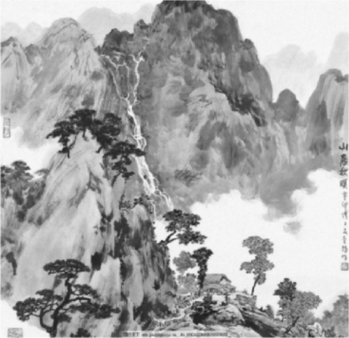

您的位置： 首页 > 唐诗
唐代（公元618-907年）是我国古典诗歌发展的全盛时期。唐诗是我国优秀的文学遗产之一，也是全世界文学宝库中的一颗灿烂的明珠。尽管唐代离现在已有一千多年了，但许多诗篇还是广为流传。
唐代的诗人特别多。李白、杜甫、白居易固然是世界闻名的伟大诗人，除他们之外，还有其他无数诗人，像满天的星斗一样。这些诗人，今天知名的就有二千三百多人。他们的作品，保存在《全唐诗》中的就有四万八千九百多首。唐诗的题材非常广泛，有的从侧面反映当时社会的阶级状况和阶级矛盾，揭露了封建社会的黑暗；有的歌颂正义战争，抒发爱国思想；有的描绘祖国河山的秀丽多娇；此外，还有抒写个人抱负和遭遇的，有表达儿女爱慕之情的，有诉说朋友交情、人生悲欢的等。总之从自然现象、政治动态、劳动生活、社会风习，直到个人感受，都逃不过诗人敏锐的目光，成为他们写作的题材。在创作方法上，既有现实主义的流派，也有浪漫主义的流派，而许多伟大的作品，则又是这两种创作方法相结合的典范，形成了我国古典诗歌的优秀传统。
......

© 版权所有 someone@263.net